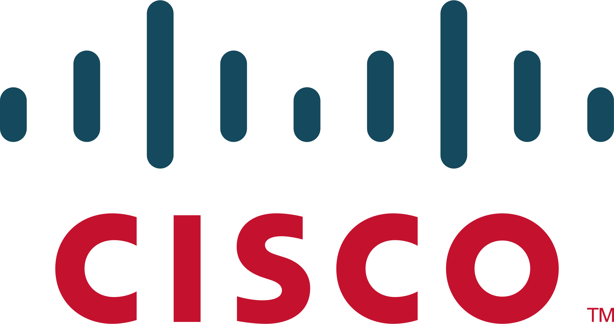
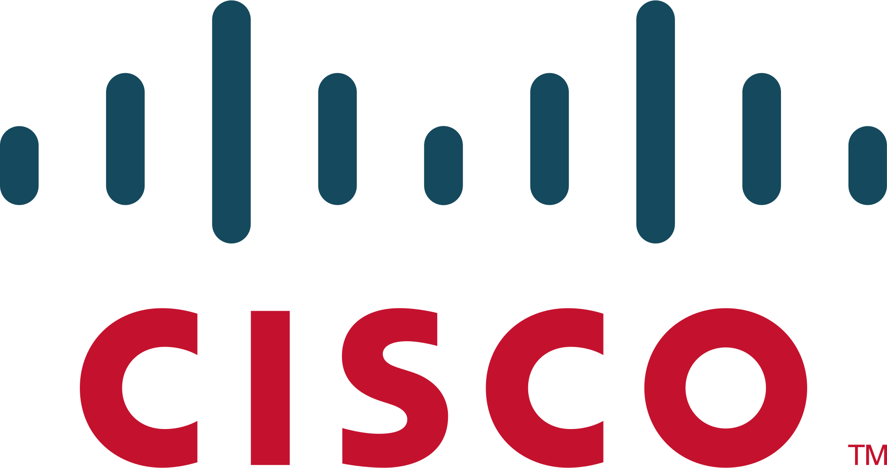

SMK Telkom Malang adalah pelopor Sekolah menengah
kejuruan pertama di Indonesia di bidang Teknologi dan
Informatika. Berpengalaman dari tahun 1992 yang telah
terakreditasi "A" dan mempunyai standart mutu ISO
9001:2008.


Kami mempunyai dua program studi unggulan yang banyak dicari oleh industri-industri di dunia IT.

Mempelajari seluruh aspek produksi software
seperti aplikasi website, aplikasi
android, maupun aplikasi dekstop.
Mempelajari cara merakit dan instalasi komputer,
instalasi jaringan Local Area
Network (LAN) dan Wide Area Network (WAN).
Banyak kompetisi di bidang IT maupun non-IT
yang banyak diraih oleh siswa-siswi SMK Telkom
Malang. Segala prestasi tersebut sangat
membanggakan sekolah dan dapat menjadi
bekal untuk meraih masa depan yang gemilang.

Ikuti terus informasi dan berita-berita terbaru tentang SMK Telkom malang.
Anda juga bisa mengikuti informasi terbaru SMK Telkom Malang di akun media sosial.
Dukungan dari berbagai pihak.


 


Pelopor SMK bidang Teknologi dan Informatika di Indonesia. Berpengalaman dari tahun 1992 yang telah terakreditasi "A" dan mempunyai standart mutu ISO 9001:2008.
Copyright 2019 © SMK Telkom Malang. All rights reserved